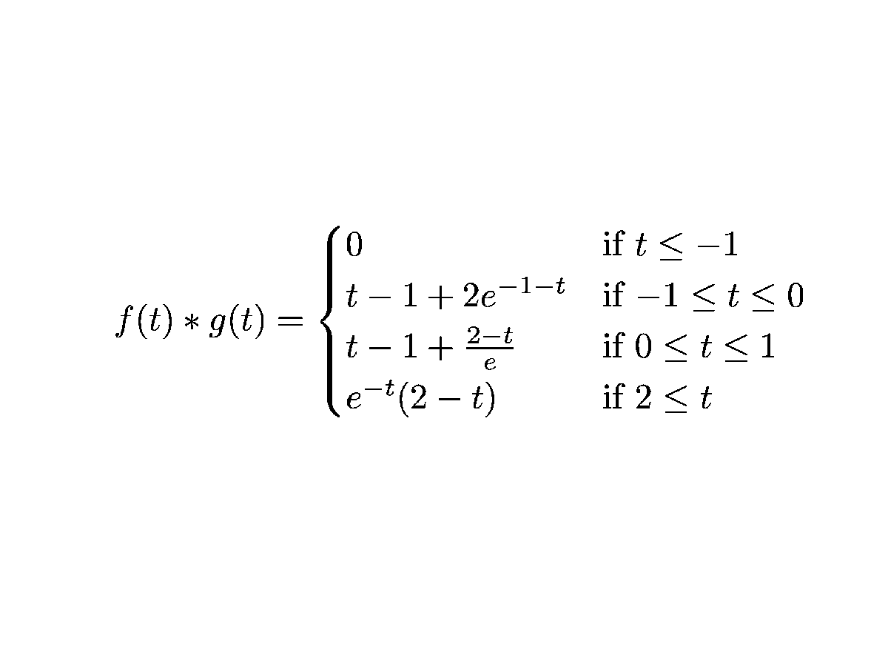
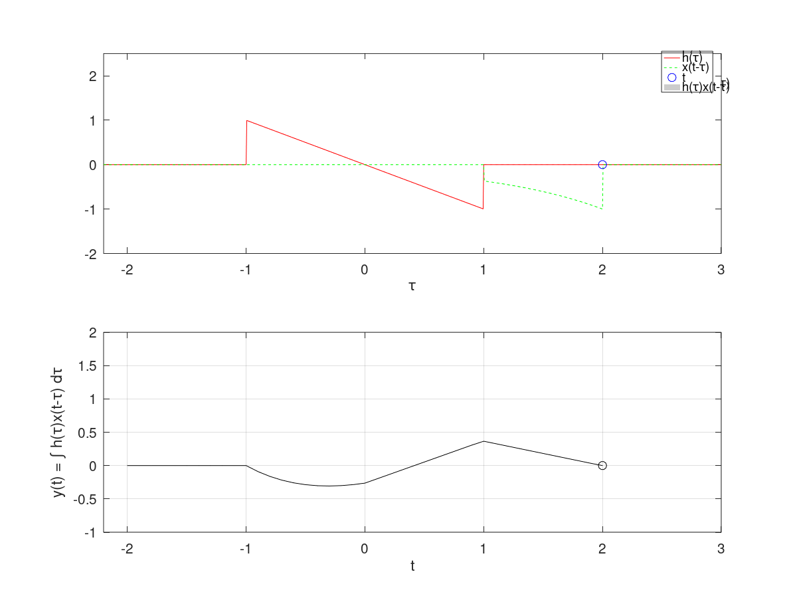

Aplicándola a nuestro caso particular
$$\int_{-1}^{1} e^{- x^2} dx =\frac{2}{2} [e^{-1} + e^{-1}] - \frac{8}{12} [-2 e^{- \varepsilon^2} (1 - 2 \varepsilon^2 )] $$
$$0.7357 +\frac{4}{3} \varepsilon^2 (1 - 2 \varepsilon^2 ) $$
$$-1<\varepsilon<1$$
#2 Regla de Simpson (n=2)
$$\int_{x_{0}}^{x_{2}} f(x) dx =\frac{h}{3} [f(x_{0}) + 4 f(x_{1} + f(x_{2})] - \frac{h^5}{90} f^4 (\varepsilon) $$
$$x_{0}<\varepsilon Aplicándola a nuestro caso particular $$\int_{-1}^{1} e^{- x^2} dx =\frac{1}{3} [e^{-1} + 4 e^{0} + e^{-1}] - \frac{1}{90} [-4 e^{- \varepsilon^2} (-4 \varepsilon^4 + 12 \varepsilon^2 -3 )] $$ $$1.5785 +\frac{2}{45} e^{- \varepsilon^2} (-4 \varepsilon^4 + 12 \varepsilon^2 -3 )] $$ $$-1<\varepsilon<1$$ #3 Regla de Simpson (n=2) $$\int_{x_{0}}^{x_{3}} f(x) dx =\frac{3}{8} h[f(x_{0}) + 3 f(x_{1} + 3 f(x_{2} + f(x_{3})] - \frac{3 h^5}{80} f^4 (\varepsilon) $$ $$x_{0}<\varepsilon Aplicándola a nuestro caso particular $$\int_{-1}^{1} e^{- x^2} dx =\frac{3}{8} \frac{2}{3} [e^{-1} + 3 e^{- \frac{1}{4}} + 3 e^{- \frac{1}{4}} + e^{-1}] + \frac{3}{80} (\frac{2}{3})^5 [-4 e^{- \varepsilon^2} (-4 \varepsilon^4 + 12 \varepsilon^2 -3 )] $$ $$1.5261 +\frac{8}{405} e^{- \varepsilon^2} (-4 \varepsilon^4 + 12 \varepsilon^2 -3 )] $$ $$-1<\varepsilon<1$$ Continuamos ahora con las fórmulas de Newton-Cotes compuestas tenemos: $$\int_{a}^{b} {f(x) dx =\frac{h}{2} [f(a)+ \sum_{j=1}^{n-1} f(x j) +f(b})] - \frac{b-a}{12} h^3 f'' (\mu)$$ $$\mu \epsilon (a,b)$$ Donde : n= número de subintervalos $$h= \frac{b-a}{n} (paso)$$ xj=a+jh j =0,1,2....n Para nuestro caso particular n=10 $$h= \frac{1-(-1)}{10} = \frac{2}{10} = 0.2$$ $$x_{0}=-1, x_{1}=-0.8, x_{2}=-0.6...x_{9}=0.8, x_{10}=1.0$$ $$\int_{-1}^{1} e^{- x^2} dx = \frac{0.2}{2} [e^{-1} + 2\sum_{j=1}^{n-1} {e^{- x^2 j}} + e^{-1}] - \frac{2}{12}(0.2) [-2 e^{- \mu^2} (1 - 2\mu^2)]$$ $$=1.4887 + 0.0133 e^{- \mu^2} (1 - 2\mu^2)$$ $$-1 < \mu < 1$$ $$\int_{a}^{b} f(x) dx =\frac{h}{3} [f(a)+ 2 \sum_{j=1}^{(n/2)-1} {f(x_{2 j})} + 4 \sum_{j=1}^{n/2} {f(x_{2 j - 1})} +f(b)] - \frac{b-a}{180} h^4 f^4 (\mu)$$ $$\mu \epsilon (a,b)$$ Donde : n= número de subintervalos $$h= \frac{b-a}{n} (paso)$$ xj=a+jh j =0,1,2....n Para nuestro caso particular n=10 $$h= \frac{1-(-1)}{10} = \frac{2}{10} = 0.2$$ $$x_{0}=-1, x_{1}=-0.8, x_{2}=-0.6...x_{9}=0.8, x_{10}=1.0$$ $$\int_{-1}^{1} e^{- x^2} dx = \frac{0.2}{3} [e^{-1} + 2\sum_{j=1}^{4} {e^{- x^2_{2 j}}} + 4\sum_{j=1}^{5} {e^{- (x_{2 j -1})^2}} + e^{-1} + e^{-1}] - \frac{2}{180} (0.2)^4 [-4 e^{- \mu^2}(-4 \mu^4 + 12 \mu^2 -3 )]$$ $$=1.4936 + 0.000031 (0.2)^4 [-4 e^{- \mu^2}(-4 \mu^4 + 12 \mu^2 -3 )]$$ $$-1 < \mu < 1$$ Ahora tenemos también la cuadratura gaussiana $$\int_{-1}^{1} f(x) dx \approx \sum_{i=1}^{n} C_{i} f(x i)$$ que ajustandola a casos "generales" $$\int_{a}^{b} f(x) dx = \int_{-1}^{1} f(\frac{(b-a)t + b + a}{2}) dt $$ Cabe alcarar que esta metodologia se apoya de la sig tabla La precisión podria ir aunmentando en cuanto aumentemos n Realiza la convolución de las siguientes señales: $f(t) = e^{-t}$ si $0\leq t \leq 1$ y $0$ en otro caso. $g(t) = t$ si $-1\leq t \leq 1$ y $0$ en otro caso. El resultado de la convolución analìtica es: El resulltado obtenido con la funciòn de Octave es: Debido a limitaciones en la falta de soporte para mostrar gifs en Octave, la animaciòn de la convolución puede ser
consultada desde el siguiente enlace al archivo de Github. Realizar la autocorrelación de la señal:
$x(t) = u(t)-2*u(t-3)+u(t-4)$ El resultado de la convolución analìtica es: El resulltado obtenido con la funciòn de Octave es: Debido a limitaciones en la falta de soporte para mostrar gifs en Octave, la animaciòn de la convolución puede ser
consultada desde el siguiente enlace al archivo de Github. Realice la simulación de la convolución de las señales (c) con (d) del problema 3.1.1 Mandamos a llamar la función Debido a limitaciones en la falta de soporte para mostrar gifs en Octave, la animaciòn de la convolución puede ser
consultada desde el siguiente enlace al archivo de Github. Realice la simulación de la correlación de las señales (c) con (d) del problema 3.1.1 Mandamos a llamar la función Debido a limitaciones en la falta de soporte para mostrar gifs en Octave, la animaciòn de la convolución puede ser
consultada desde el siguiente enlace al archivo de Github. Realice la la convolución de las señales (c) con (d) del problema 3.1.1
utilizando el comando conv de MATLAB, muestre el código utilizado y gráfique el resultado
sugerencia: Utilice las propiedades de traslación de la convolución. Definimos el primer vector Defnimos el segundo vector Haciendo la Convolución Grafica de La convolución Hwei, P. (2020). Signals and Systems. Estados Unidos. Mc Graw Hill. Lathi, B. & Green, R. (2018). Linear systems and signals. Estados Unidos. Oxford University Press.
lista=imread('html/lista.jpg');
imshow(lista);
%
% y así, para nuestro caso específco con (n=2)
%
% $$\int_{-1}^{1} e^{- x^2} dx \approx e^{- (0.5773502692)^2} + e^{- (-0.5773502692)^2}$$
%

r=exp(- (0.5773502692)^2) + exp(- (-0.5773502692)^2)
r = 1.4331
Ejercicio 1.
conv1_an=imread('html/conv1_an.png');
imshow(conv1_an);

u = @(t) 1*(t >=0);
f = @(t) exp(-t).*(u(t-1)-u(t));
g = @(t) t.*(u(t-1) - u(t+1));
convconm(f,g)

Ejercicio 2.
conv2_an=imread('html/conv2_an.png');
imshow(conv2_an);
x = @(t) (t>=-3&t<0.0) - (t>=-4&t<-3);
f = @(t) (t>=0&t<3.0) - (t>=3&t<4);
convconm2(x,f)
Ejercicio 3.
C=[0 -9 -6 -3 0 3 6 9 0 0 0];
n=-4:6;
stem(n,C)
axis([-4 4 -10 10])
title('Grafica C')
xlabel('n')
ylabel('x[n]')
D=[0 0 4 2 0 2 4 0 0 0 0 ];
stem(n,D)
axis([-4 4 -2 5])
title('Grafica D')
xlabel('n')
ylabel('x[n]')
convdisc([n;C],[n;D])
Ejercicio 4.
C=[0 -9 -6 -3 0 3 6 9 0 0 0];
n=-4:6;
stem(n,C)
axis([-4 4 -10 10])
title('Grafica C')
xlabel('n')
ylabel('x[n]')
D = [0 0 0 0 4 2 0 2 4 0 0]
stem(n,D)
axis([-4 4 -2 5])
title('Grafica D')
xlabel('n')
ylabel('x[n]')
D =
0 0 0 0 4 2 0 2 4 0 0
convdisc2([n;C],[n;D])
Ejercicio 5
C=[0 -9 -6 -3 0 3 6 9 0 0 0];
n=-4:6;
stem(n,C)
axis([-4 4 -10 10])
title('Grafica C')
xlabel('n')
ylabel('x[n]')
D=[0 0 4 2 0 2 4 0 0 0 0 ];
stem(n,D)
axis([-4 4 -2 5])
title('Grafica D')
xlabel('n')
ylabel('x[n]')
X=-7:13;
R=conv(C,D)
R =
Columns 1 through 16:
0 0 0 -36 -42 -24 -24 -36 0 36 24 24 42 36 0 0
Columns 17 through 21:
0 0 0 0 0
stem(X,R)
axis([-8 14 -37 37])
title('Convolución de la grafica C con D')
xlabel('n')
ylabel('x[n]')
Referencias:
{kind=link}
{kind=link}
{kind=link}
{kind=link}